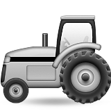
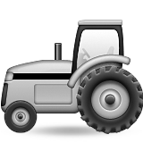

Rijkswaterstaat Strooit, but using Leaflet and OpenStreetMap.
This map shows the real-time positions of Rijkswaterstaat's winter service vehicles, and refreshes every 20 seconds.  are trucks on duty;  are waiting for snow in their depot. Come to Maptime Amsterdam's next Meetup to learn how to make interactive maps yourself!
are trucks on duty;  are waiting for snow in their depot. Come to Maptime Amsterdam's next Meetup to learn how to make interactive maps yourself!